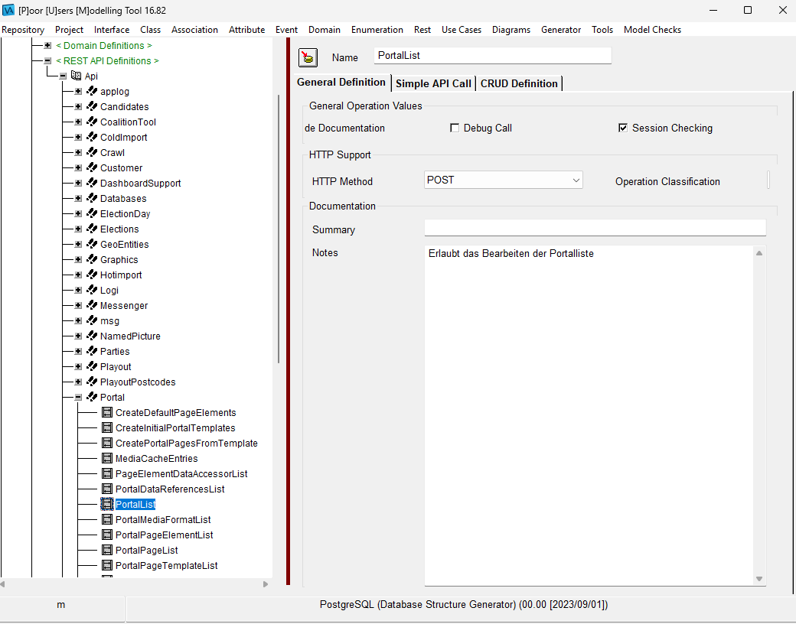
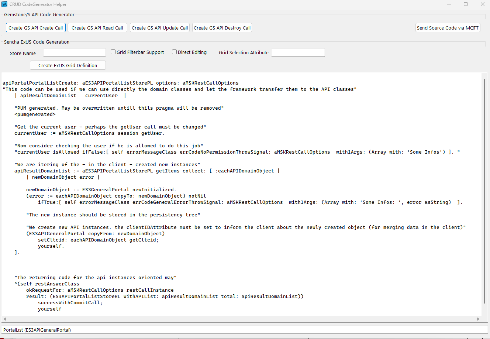

|
<< Click to Display Table of Contents >> Navigation: »No topics above this level« PUMConnector |
Der PUMConnector stellt die Verbindung des PUM Modelling Tools zum Gemstone/S Datenbanksystem her. Es ermöglicht den Transfer von Methoden, die PUM erzeugt. Dadurch spart man sich eine Menge Tipp Arbeit.
Der Austausch findet zwischen PUM und einem Gemstone/S System über RabbitMQ statt. Es muss ein Hilfsprozess für die zu benutzende Gemstone/S Datenbank gestartet werden, der die Verbindung zu einem RMQ Server aufbaut und auf Telegramme wartet.
Folgende Informationen sind notwendig
•Gemstone/S wartet auf das Topic "pum.gemstonename.source" über den exchange "amq.topic"
•Übertragen werden die folgenden Informationen in einem Array mit den jeweiligen Attributen
ocategory::string: category (Extensions müssen mit einem "*" anfangen
oclassName::string: Klassenname
oclassSide::boolean: Klassenseite (true) oder Instanzseite (false)
ostamp::string: Stamp der Methode im Format "MSK 01/06/2025 12:41"
osource::string: source code
omethodName::string: Name of Method
Um den Transfer der Quelltexte via RMQ zu ermöglichen und den Hintergrund-Task für Gemstone dies zu ermöglichen, müssen die folgenden Einträge definiert werden. Man sieht, dass die Einträge den normalen Einträgen eines RMQ Connectors entsprechen - lediglich das "PAS" wurde durch ein "PUM" ersetzt. Der Transfer der Quelltexte kann daher über einen gesonderten RMQ-Server laufen.
#
# RMQ Verbindung für PUM - für transfer von methoden quelltexten
#
export PUM_APP_RMQ_ADR="rechneradresse"
export PUM_APP_RMQ_PORT=5672
export PUM_APP_RMQ_ACCOUNT="rmq account login"
export PUM_APP_RMQ_PASSWD="rmq account password"
export PUM_APP_RMQ_VHOST="/"
export PUM_APP_TLS="true"
export PUM_APP_RMQ_PRVKEY="/home/mf/ssl/privkey.pem"
export PUM_APP_RMQ_CERT_PATH="/home/mf/ssl/fullchain.pem"
export PUM_APP_RMQ_CACERT_PATH="/home/mf/ssl/all_cacerts.pem"
#
# queuename für methoden transfer, binded über den gleichen string an amq.topic
#
export PUMCONNECTORQUEUE="pum.<gemstonename>.source"
Diese Einstellungen werden nur vom Script pas_start_pum_connector.sh ausgewertet
Der Versand aus PUM heraus (einer VASTPlatform Anwendung) geschieht mittels MQTT. Hier wird man sicherlich manchmal Probleme haben, um die Verbindung zu testen. Daher kann ich für Tests unter Linux das Paket mosquitto empfehlen, mit dem man MQTT testen kann:
mosquitto_pub -h <rechnername> -p 8883 -t "test/hallo" -m "Hallo" -u "<mqtt-user>" -P "<mqtt-password"
Bisher gibt es nur Unterstützung für CRUD-Calls. Man selektiert also einen CRUD-Call in PUM:

Auswahl einer CRUD API
Und über Generator/ExtJS/GS CRUD Code Helper bekommt man ein Fenster zur Erzeugung von ExtJS-Code und Gemstone/S Code:

CRUD Code Helper
Hier kann man sich den erzeugten Quelltext anschauen. Via "Send Source ..." kann man alle vier Codesequenzen in einem Rutsch nach Gemstone/S transferieren. In Gemstone/S tauschen diese Methoden unter Extension-Kategorien unter der Service-Klasse auf, die alle API-Calls beinhaltet.